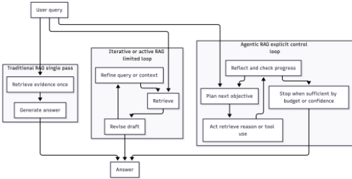
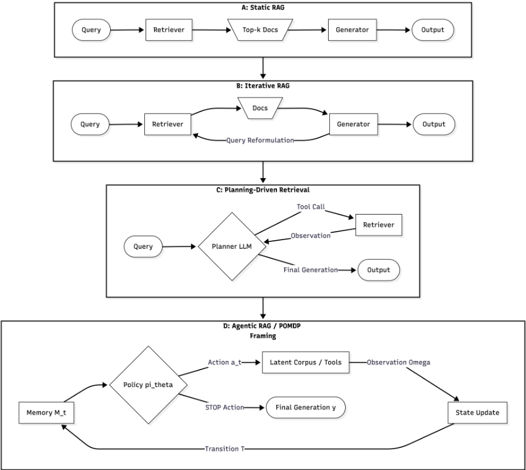
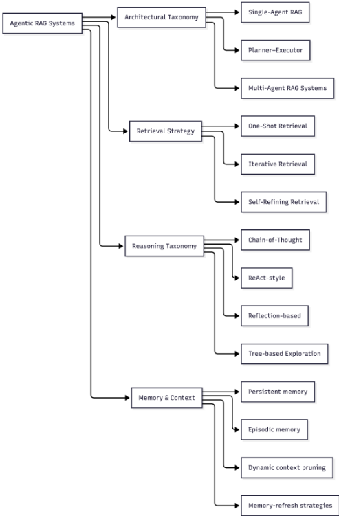
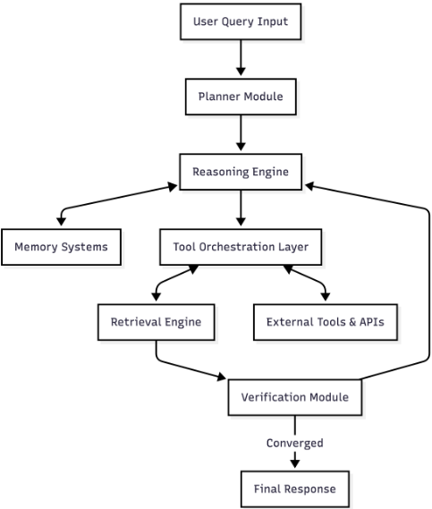
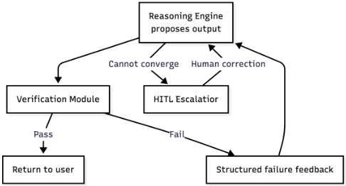
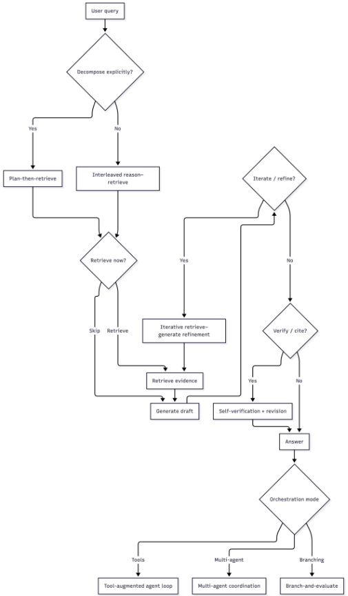
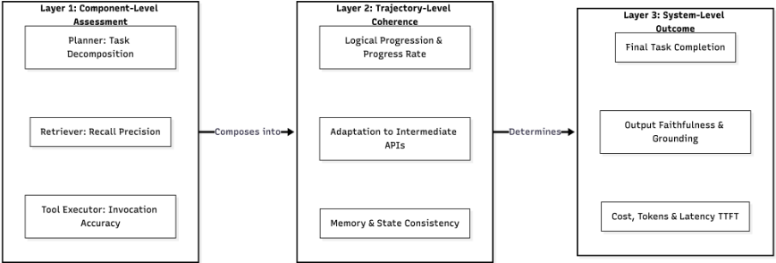
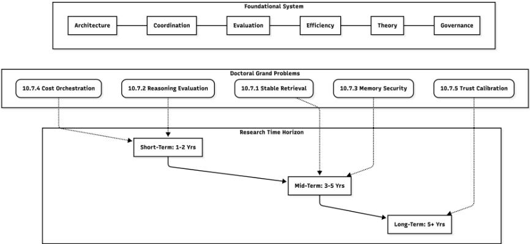

SoK：Agentic 检索增强生成（Agentic RAG）：分类体系、架构、评测与研究方向
这篇 SoK 论文针对 Agentic RAG 领域架构碎片化、缺乏统一分类与评测标准的问题，给出首个系统化框架。作者将 agentic 检索-生成循环形式化为有限时域 POMDP，从架构拓扑、检索策略、推理范式、记忆与上下文管理四个维度建立分类体系，并分解出 Planner、Retrieval Engine、Reasoning Engine、Memory Systems、Tool Orchestration、Verification 等核心模块与七种可复用设计模式。论文论证传统静态指标（BLEU/ROUGE）无法评估多步 Agent 行为，提出组件级-轨迹级-系统级三层评测管线及 Progress Rate、Effective Information Rate 等轨迹级指标，并系统归纳检索漂移、迭代幻觉传播、工具级联错误、间接 prompt injection、memory poisoning 等失效模式。核心结论：Agentic RAG 应被视为序列决策系统而非检索管线的扩展，可靠落地依赖形式化评测、成本感知编排与 HITL 监督机制。
Agentic RAG 快速工业落地但研究高度碎片化：缺乏统一分类体系、评测方法不一致、自主循环带来的可靠性风险未解决；同时传统静态 RAG 的 retrieve-then-read 流程在多跳与知识密集任务上脆弱（context overloading、无纠错回路、盲目检索降低回答质量）。
将 Agentic RAG 形式化为有限时域 POMDP（记忆状态 M_t 承载上下文，动作空间含 Retrieve/Reason/工具调用/生成，策略 πθ 驱动循环直至 STOP），据此界定 agentic 行为与 iterative retrieval 的边界；提出四维 MECE 分类（架构拓扑、检索策略、推理范式、记忆/上下文范式）；给出模块化架构分解（Planner、Retrieval Engine、Reasoning Engine/Controller、Memory Systems、Tool Orchestration Layer、Verification & Self-Correction，含 ACI 接口与 PPAR 闭环）；归纳七种设计模式（Plan-Then-Retrieve、Retrieve-Reflect-Refine、Decomposition-Based Retrieval、Tool-Augmented Retrieval Loop、Multi-Agent Collaboration、Retrieval-Grounded Self-Verification、Human-As-A-Tool）；提出三层评测管线（组件级/轨迹级/系统级）与 PR、EIR 指标；并系统化失效模式分析与五个博士级研究方向。
本文为 SoK 综述，未报告作者自己的新实验；正文引用的量化发现包括：retrieval-augmented legal research tools 幻觉率高达 33%，与厂商宣称相矛盾
引用研究：向语料注入仅 5 篇精心构造的恶意文档，即可使 RAG 系统以 90% 成功率生成攻击者指定的答案
引用 A-RAG 实证：分层检索接口让 agent 检索的 token 显著少于传统静态方法且准确率更高
定义了 Progress Rate 与 Effective Information Rate 两个轨迹级指标，但未给出基准数值
首个将 Agentic RAG 作为序列决策系统统一梳理的 SoK：以 POMDP 形式化明确 agentic 行为与 iterative retrieval 的概念边界，并明确将其定位为系统问题而非 prompt engineering 的延伸；把分类体系、模块化架构分解、设计模式、三层评测框架与失效模式分类整合为单一参考框架，区别于已有单点综述或基准列表式工作。
相关度级别：high
命中能力域：3.1 上下文工程与记忆 | 3.3 Agent 架构与工具使用 | 3.4 多智能体协作 | 3.5 评测与可靠使用
理由：论文直接命中团队四个核心能力域：RAG/检索编排、动态上下文剪枝（FILCO、Provence）与 episodic/persistent memory（MemoryBank、MemGPT）对应 3.1；Agent loop、工具调用、规划与反思、ACI 接口及 MCP 工具协议对应 3.3；Multi-Agent Collaboration 模式与 LangGraph/AutoGen/CrewAI/ADK 编排框架对应 3.4；三层评测管线、轨迹级指标、失效模式分类与成本感知编排对应 3.5。对团队'把模型用好而非训练模型'的定位而言，这是一份可直接指导架构选型与评测体系设计的地图。
建议动作：深入精读并做内部分享
arXiv:2603.07379v1 [cs.AI] 2026年3月7日
Saroj Mishra ∗、Suman Niroula †、Umesh Yadav ‡、Dilip Thakur §、Srijan Gyawali ¶ 与 Shiva Gaire ¶
∗ 北达科他大学（University of North Dakota）：saroj.mishra773@gmail.com
† 扬斯敦州立大学（Youngstown State University）：sum.nir1@gmail.com
‡ 托莱多大学（University of Toledo）：yadav.umesh0518@gmail.com
§ 密苏里大学（University of Missouri）：dileepthakur87@gmail.com
¶ 特里布文大学（Tribhuvan University）：gyawalisrijan01@gmail.com, mail@shivagaire.com.np
摘要 - 检索增强生成（Retrieval-Augmented Generation, RAG）系统正日益演变为智能体化（agentic）架构，其中大语言模型自主协调多步推理、动态记忆管理与迭代检索策略。尽管工业界采用迅速，当前研究仍缺乏将 Agentic RAG 视为序贯决策系统的系统性理解，导致架构高度碎片化、评估方法不一致以及可靠性风险悬而未决。本知识系统化（Systematization of Knowledge, SoK）论文首次提供了理解这些自主系统的统一框架。我们将智能体化检索-生成循环形式化为有限时域部分可观测马尔可夫决策过程，并显式建模其控制策略与状态转移。基于这一形式化，我们构建了全面的分类法与模块化架构分解，依据规划机制、检索编排、记忆范式和工具调用行为对系统进行分类。我们进一步分析了传统静态评估实践的关键局限，并识别出自主循环固有的严重系统性风险，包括复合式幻觉传播、记忆投毒、检索错位以及级联式工具执行漏洞。最后，我们概述了涵盖稳定自适应检索、成本感知编排、形式化轨迹评估与监督机制的关键博士级研究方向，为构建可靠、可控且可扩展的智能体检索系统提供了权威路线图。
索引术语 - Agentic RAG、检索增强生成、序贯决策过程、工具调用、多步推理、系统架构、评估框架、AI 安全。
检索增强生成（Retrieval-Augmented Generation, RAG）在根本上将参数化生成器与非参数化语料库耦合在一起，使输出以检索到的证据为条件 [1]。然而，标准形式依赖于静态控制流：检索器获取一组固定的段落，生成器在不进行自适应多步决策的情况下合成答案 [2]。这种确定性流水线在知识密集型与多跳任务中表现出严重的脆弱性 [3]。由于检索在推理开始之前盲目发生，静态系统存在上下文过载问题 [4]，缺乏针对噪声检索的原生纠正回路 [5]，并且不加区分地进行检索而不考虑输入是否需要，这可能主动降低响应质量 [6]。
为缓解这些局限，早期启发式方法引入了主动式与迭代式检索范式 [7]。诸如统一主动检索（unified active-retrieval, UAR）之类的框架将检索触发视为一种动态决策 [8]，而生成在环（generation-in-the-loop）架构则交错插入中间推理以细化后续查询 [9]。与此同时，工具增强大语言模型（Large Language Models, LLMs）的出现为完全自主控制奠定了基础 [10], [11]。诸如 ReAct（Reasoning and Acting）等模型证明，LLM 可以充当推理 Agent，发出交错的思考与行动 [12]。此外，融合情景记忆 [13]、基于树的探索 [14] 与交互式搜索 [15] 的范式证明，Agent 能够基于环境观察来优化轨迹。
如图 1 所示，动态检索策略与自主规划回路的融合已凝结为一种新范式：Agentic RAG [16]。在该架构中，检索不再是一个预处理步骤，而是在多步、策略驱动的推理轨迹中被显式管理的工具 [17]。LLM 编排整个过程，决定执行哪些动作、是否进行迭代，以及如何在多个粒度上进行自适应搜索 [18]。这要求从固定的“先检索后阅读”（retrieve-then-read）工作流向模块化、基于模式的控制策略发生根本性转变 [19]。
本文将自身定位为一篇知识系统化（Systematization of Knowledge, SoK）论文。当前，Agentic RAG 系统的快速扩散已导致严重的领域碎片化、统一分类体系的缺乏以及标准化评估框架的缺位。为弥补这些系统性空白，本工作的主要贡献总结如下：

涵盖规划策略、检索编排、记忆范式与工具协调机制。
本节阐述了将 Agentic RAG 形式化为一种超越静态检索增强生成的独立范式的动机。我们阐明了传统 RAG 流水线与能够动态规划、检索并自适应调整的自主式多步推理架构之间的概念差距。通过提出对结构化分类体系、评估改革与形式化建模的需求，我们将 Agentic RAG 定位为一个系统性问题，而非提示工程的延伸。下一节将把这一讨论植根于大语言模型与检索系统的基础演进之中，为形式化定义确立必要的理论与历史背景。
本节确立支撑 Agentic RAG 系统的概念基石。本节回顾了大语言模型（LLM）、经典检索增强生成（RAG）、工具增强范式、规划与记忆架构。其目标是为后续的形式化、分类体系与架构讨论奠定基于证据的基础。
现代大语言模型（LLM）依赖 Transformer 架构从海量语料中学习上下文表示 [20], [21]。尽管它们是能力强大的文本生成器，其自主推理能力主要源于上下文学习（in-context learning），即在不更新参数的情况下，通过提示条件化适应新任务的能力 [22]。思维链（CoT）提示等技术对此进行了扩展，通过引出中间推理步骤，使模型能够分解问题并遵循多步骤流程 [23]。这些零样本规划能力构成了 Agentic 控制的基础引擎。
然而，LLM 存在根本性局限，因而需要外部增强。其参数化知识在训练时便已冻结 [1]，这使得它们在面对新颖或小众的查询时容易产生事实幻觉 [24]。此外，仅仅通过扩大上下文窗口来注入更多信息并不足够；模型常常忽略位于长输入中部的相关数据，这一缺陷被称为“迷失在中间”（lost in the middle）效应 [4]。要克服这些限制，需要主动的工具调用与动态检索，而非被动的文本生成。
为了解决冻结的 LLM 的知识匮乏问题，检索增强生成（Retrieval-Augmented Generation, RAG）将参数化生成器与非参数化检索索引相结合 [1]。经典 RAG 利用稠密检索模型（如 DPR）将查询和文档映射到共享嵌入空间中，获取最相关的 top-k 个段落，供生成器以其为条件进行生成 [2]。诸如 Fusion-in-Decoder（FiD）之类的扩展方法使模型能够高效地融合来自多个检索文档的证据，同时保持计算开销可控 [25]。
尽管取得了这些进展，标准 RAG 架构仍依赖于严格静态的控制流：先检索一次，然后生成。这种确定性流水线在根本上是脆弱的。检索质量完全取决于最初往往不够明确的用户查询，没有任何机制能够基于中间生成状态来改进搜索 [7]。由于检索到的上下文在开始时便已固定，当初始证据含噪或不完整时，系统无法自主进行自我纠错 [5]。这些结构上的僵化直接推动了向迭代式、策略驱动的检索框架的转变。
另一条并行的研究轨迹将大语言模型（LLM）从静态文本生成器重新定义为能够在外部环境中执行动作的交互式智能体。ReAct（Reasoning and Acting，推理与行动）引入了一种提示范式，将显式推理轨迹与动作（例如搜索查询、API 调用）交织在一起，使模型能够迭代地收集信息，并根据观察结果调整其行动轨迹 [12]。Toolformer 解决了一个互补性的挑战：教会模型自主决定调用哪些工具、何时调用这些工具，以及如何将结果纳入其中 [10]。MRKL Systems 提出了一种模块化的神经符号架构，其中 LLM 充当路由器，将任务委派给专门化的外部模块，强调了超越纯参数化能力的可扩展性 [11]。
智能体化 LLM 的概念通过自我改进与反思控制方面的工作进一步明晰。Reflexion 引入了语言强化学习（verbal reinforcement learning），其中智能体将其对过去失败的文本反思存储在情景记忆缓冲区中，并利用这些反思来改进后续的尝试 [13]。Wang 等人的一篇全面综述将基于 LLM 的自主智能体形式化为一个由画像（profiling）、记忆、规划和动作模块组成的系统 [26]。这些进展确立了智能体设计模式——规划、工具调用和反思——而 Agentic RAG 系统将这些模式直接嵌入到检索流水线之中。
许多知识密集型任务需要对多条证据进行推理，而这些证据无法在单一步骤中检索得到。HotpotQA 通过引入一个多跳问答基准测试（multi-hop question answering benchmark）将这一需求形式化，在该基准测试中，系统必须对多个支持文档进行推理才能得出答案 [3]。标准检索方法难以应对此类任务，因为后续推理步骤所需的信息依赖于中间推论，由此形成的依赖关系是单次检索无法解决的 [9]。
查询分解通过将复杂查询拆解为更简单的子问题来应对这一挑战。Least-to-most prompting 按顺序求解分解后的问题 [27]，而 Plan-and-Solve prompting 则在执行前生成显式的预先计划 [28]。Self-Ask 通过教模型生成显式的后续问题并将其路由至搜索引擎，扩展了这一范式 [29]。
交错式检索-推理方法则更进一步，将检索与正在进行的思维链（chain-of-thought, CoT）生成紧密耦合。IRCoT 将推理步骤与检索调用交错进行，利用不断演化的轨迹来指导下一步应检索的内容 [9]。Tree-of-Thoughts 将其推广为借助搜索与自我评估进行的显式树状结构探索 [30]。这些方法奠定了推理基础，Agentic 检索系统正是在这些基础之上构建其规划机制。
有效的多步推理需要在交互过程中维护并更新状态。Agentic 系统中的短期记忆通常对应于不断演化的上下文窗口：即观察、动作与中间输出的累积。然而，随着上下文不断变长，模型对信息的利用会出现退化，这催生了动态上下文剪枝与选择性注意等策略 [4]。
长期记忆系统使 Agent 能够跨任务或跨会话地保留并召回信息。基于检索的记忆将过往经验以嵌入（embedding）的形式存储在向量库（vector store）中，并在推理时检索相关条目，其工作方式类似于 RAG，但作用对象是 Agent 自身的历史 [31]。情景记忆（episodic memory）则捕获过往交互轨迹的结构化记录，包括所采取的动作以及所获得的结果 [13]。
近期的工作提出了统一的架构，能够同时动态管理短期工作记忆与长期持久存储，使 Agent 可以根据任务需求有选择地巩固、检索和遗忘信息 [32]。这些持久记忆机制构成了状态跟踪能力的必要前提，而正是这种状态跟踪能力将 Agentic RAG 与静态流水线区分开来。
从静态生成到检索增强系统的演进，揭示了使自主推理成为可能的架构原语。然而，现有文献缺乏一个精确的形式化边界来区分迭代式检索与真正的 Agentic 行为。下一节将利用充要条件对 Agentic RAG 进行形式化定义，并将其置于序贯决策模型的框架中，以消除这一模糊性。
从静态检索增强生成（RAG）到 Agentic RAG 的转变，代表着大语言模型（LLMs）与外部知识交互方式的一次根本性范式转变。传统 RAG 严格地以线性流水线方式运行——基于初始查询获取文档并将其传递给生成器——因而缺乏自主纠错、多步推理和动态上下文构建的能力。本节追溯了从静态流水线到规划驱动检索系统的演进路径。我们形式化地定义 Agentic RAG，以显式的数学形式映射其状态转移与控制策略，并划定单次主动检索与真正 Agentic 工作流之间的边界。
标准 RAG 架构 [1] 通过一种确定性的顺序机制将知识检索与文本生成解耦。给定用户查询 q 和知识语料库 C，检索器获取由 topk 个文档组成的集合 D，生成器则以 q 和 D 为条件产生输出 y。这种静态的、一次性检索范式存在三个关键的系统性局限：
首先，它极易受到**检索不相关**与**上下文过载**的影响。如果初始嵌入将查询映射到次优文档，生成器将被迫以无关噪声为条件来生成输出。正如 Liu 等人 [33] 所证明的，LLM 存在“迷失在中间”（lost in the middle）现象，即包含过多低信号的检索上下文会降低推理质量。
其次，静态流水线**不具备自适应推理或纠错循环**。如果复杂查询需要综合来自在向量空间中不共享语义相似性的多个不同文档的信息，单遍检索器将无法获取必要的衔接性上下文 [34], [35]。
第三，这种架构**容易发生错误传播**。由于检索阶段与生成阶段严格隔离，LLM 无法暂停生成以请求缺失的信息，从而在检索上下文不足时产生幻觉 [36]。
为了解决单次检索的脆弱性，该领域转向了迭代检索机制。复杂的用户意图，特别是在需要多跳推理的领域中（例如，在 HotpotQA [3] 或 MuSiQue [37] 等数据集上回答组合式问题），很少能映射到单个连续的文本块。
迭代检索允许系统对数据库执行顺序查询，其中后续查询以先前步骤中检索到的信息为条件 [38]。这种必要性源于查询重构问题。用户的初始提示往往不够明确。迭代系统利用 LLM 基于部分信息对查询进行重写或扩展，逐步构建高保真的上下文窗口。然而，早期的迭代检索模型依赖于启发式触发器（例如，每 n 个 token 检索一次），而非对何时真正需要外部知识的语义理解。
基于启发式的迭代检索的局限性促成了规划模块的集成，进而催生了规划驱动检索。受 ReAct（Reasoning and Acting，推理与行动）框架 [12] 的启发，各类架构开始将检索器与 LLM 规划器相耦合。
与此同时，Toolformer [10] 等范式证实了 LLM 可以被训练为自主调用外部 API。WebGPT [15] 等模型则表明，LLM 能够浏览文本界面并执行搜索查询，以便在形成答案之前收集证据。开源自主 Agent 框架（例如 AutoGPT [39]）的出现，进一步使赋予 LLM 持续执行权限的概念成为常态。
在这一演进的范式中，LLM 并非仅仅消费检索到的文本；它会主动决定何时将检索器作为外部工具调用、向其传递何种具体查询，以及如何对照总体目标评估返回的上下文。这种通过自主规划循环对检索进行的编排，构成了 Agentic RAG 的基础架构。从确定性的单遍流水线到这一策略驱动框架的概念演进如图 2 所示。
Agentic RAG 的界定并非取决于是否存在检索器，而是取决于是否存在一个在离散动作空间上支配检索与推理的自主控制策略。
1) 系统级形式化：我们将 Agentic RAG 建模为有限时域的部分可观测马尔可夫决策过程（POMDP），其中外部知识语料库 C 构成一个潜在的、部分可观测的信息源。我们将该系统形式化地定义为如下元组：
其中：
在该形式化中，状态 s t 表示不断演化的任务上下文，包括用户查询、中间推理轨迹、检索到的文档以及在交互过程中积累的相关记忆元素。动作 a t 对应于诸如发出检索查询、调用外部工具、更新记忆或生成响应 token 等决策。策略 π θ ( a t |M t ) 定义了 Agent 在当前上下文条件下选择动作的策略。环境则刻画了 Agent 在任务执行期间与之交互的外部知识源、检索系统和工具接口。
在任意离散时间步 t ∈ [0 , T max ]（其中 T max 为有限时域上限），系统维护一个以初始用户查询 q 为种子的记忆状态 M t。随机策略 π θ 采样下一个动作 a t ∼ π θ ( ·|M t )。
若策略选择检索动作 a t = Retrieve ( q ′ t )，观测函数会查询潜在语料库，并以观测 o t 确定性地更新记忆，使得 M t +1 = M t ∪O ( o t | s t , a t )。若策略规定执行推理步骤 a t = Reason ( c t )，则中间结论 c t 被追加，即 M t +1 = M t ∪ { c t }。该过程严格在有限时域 T max 内迭代，直至 π θ 输出 STOP 动作，从而触发最终生成 y = G ( M T )。
在实践中，对环境维持精确的贝叶斯信念状态对于大规模语言 Agent 而言是不可行的。相反，大多数实现通过结构化的记忆表示 M t 来近似信念状态。这些表示可能包括中间推理轨迹、检索到的文档集合、工具输出以及在多个推理步骤中积累的经总结的上下文知识。因此，信念更新对应于记忆更新操作，例如选择性检索增强、摘要、剪除冗余信息，或采用学习型记忆控制器来保留高效用信号并丢弃低相关性上下文。此类近似使得推理在多步交互过程中保持可处理，同时保留了相关任务信息。
2) 必要性质：基于上述 POMDP 形式化，Agentic RAG 系统必须具备以下内在性质。这些操作性需求与其对应的形式化 POMDP 组件之间的直接映射关系总结于表 I 中。

尽管这四项特性是从分析角度将一个系统归类为 Agentic RAG 的必要条件，但它们并不足以保证稳定性或安全性。一个架构可能拥有正确的 POMDP 循环，却仍会因策略未对齐或记忆损坏而失效——这一局限使得后续章节所讨论的严格评估与安全框架成为必需。归根结底，Agentic RAG 构成了一个在自适应检索策略下的部分可观测序贯决策过程。
相比之下，Agentic RAG 将规划与生成相分离。它是策略驱动的，会执行多步工具调用，并且能够执行那些并不直接产生输出 token 的操作（例如自我纠错、丢弃检索到的上下文，或切换工具）。表 II 对这些架构上的区别进行了总结。
| Agentic Property | POMDP Component | Operational Interpre- tation |
|---|---|---|
| Iterative Control | Stochastic Policy π θ | Non-deterministic action selection governing the loop |
| Dynamic Retrieval | Action Space A | Query generation treated as a discrete runtime ac- tion |
| Tool Mediation | Observation Model O | External API interaction returning state context |
| State Persistence | Belief State b t ≈M t | Memory acts as a tractable approximation of hidden state |
| Termination | Finite Horizon T max | Constrained loop depth to prevent infinite execu- tion |
| Agentic Property | POMDP Component | Operational Interpre- tation |
| Feature | Active RAG | Agentic RAG |
|---|---|---|
| Trigger Mechanism | Log-probability thresh- olds or token heuristics | Policy-driven reasoning and explicit tool-calling |
| Control Flow | Single-pass, forward- generating | Iterative, multi-step planning loops |
| Planning Explicit- ness | Implicit during genera- tion | Explicit deliberative phase |
| Context Manage- ment | Append-only (accumu- lates fetched text) | Read/Write/Prune capabilities over working memory |
| Failure Handling | Cannot self-correct prior token generation | Can discard poor re- trieval and explicitly try new query |
| Feature | Active RAG | Agentic RAG |
给定 POMDP 表示，Agentic RAG 系统的工程构建可以形式化为一个受约束的序贯决策问题。其目标是最优化随机策略 π θ，使最终输出 y 相对于理想响应 y ∗ 的保真度最大化，同时严格最小化迭代循环的计算开销。
我们在由策略 π θ 生成的轨迹 τ = ( M 0 , a 0 , o 1 , M 1 , . . . , M T ) 上定义一个目标函数。设 R task ( y, y ∗ ) 为度量响应质量的终端奖励函数。设 C ( a t ) 表示逐步代价函数，该函数对延迟、token 消耗以及 API 限制进行建模。Agentic RAG 系统的问题形式化如下：
其中 λ 是控制推理深度与运行效率之间权衡的正则化参数。
本节通过形式化 Agentic RAG 的状态转移，并定义迭代控制、动态检索与记忆持久性的必要属性，确立了 Agentic RAG 的理论主干。我们证明，超越静态与主动式 RAG 流水线会将该架构从根本上转变为一个受预算约束的序贯决策问题。在阐明这一结构基础之后，第 IV 节将依据这些运行维度对现有 Agentic RAG 框架进行分类，从而系统化地梳理该领域。
检索增强生成（Retrieval-Augmented Generation, RAG）将检索器（Retriever）与生成器（Generator）——通常为大语言模型（Large Language Model, LLM）——耦合在一起，使模型输出锚定于外部证据，而非仅仅依赖参数化知识 [1], [40], [41]。Agentic RAG 对这一范式加以扩展：通过引入一个显式的规划器（Planner），在控制策略（Control Policy）的约束下统辖工具调用（Tool Invocation，包括检索），从而实现超越单次“先检索后生成”（retrieve-then-generate）流程的迭代检索（Iterative Retrieval）、动态上下文构建（Dynamic Context Construction）与多步推理（Multi-step Reasoning）[12], [42]-[44]。
本节给出一种基于属性的分类法（attribute-based taxonomy）：我们依据若干相互正交的维度轴对 Agentic RAG 系统进行分类，这些维度轴刻画的是系统属于哪一类型，而非系统应如何实现。第 V 节将这些类别实例化为具体架构，而第 VI 节则将反复出现的解决方案抽象为设计模式。
为了对 Agentic RAG 领域的全貌给出严格分类，我们提出一个围绕四个维度组织的分类法：规划（Planning）、记忆（Memory）、工具编排（Tool Orchestration）与检索策略（Retrieval Strategy）。如图 3 所示，就系统的运行控制流而言，这些维度被设计为相互独立、完全穷尽（Mutually Exclusive and Collectively Exhaustive, MECE）。系统可以在每个维度内部实现不同程度的复杂性，但每一个 Agentic RAG 架构都必然要在这四个维度轴上做出设计选择。表 III 综合了这一分类，将常见的典型架构映射到其各自的核心分类属性。
Architectural taxonomy in Agentic RAG classifies systems by agent topology -i.e., how many distinct decision-making entities exist, where the Planner function is located, and whether roles such as retrieval and generation are centrally controlled or distributed. This axis is intentionally orthogonal to retrieval strategy: a single-agent system may still perform iterative retrieval, and a multi-agent system may still perform one-shot retrieval if its control policy is static [40], [41]. Modern SDKs and frameworks expose topology and tool loops explicitly [45], [46], enabling the same application class to be realized under different topologies [43], [44], [47].
1) Single-Agent RAG: Single-Agent RAG denotes systems where one agent jointly performs planning and generation, invoking retrieval and other tools under a single control policy. Classical RAG formulations already combine a retriever and generator, but they need not be agentic if retrieval is purely pre-specified; the agentic variant emerges when the planner role adapts actions [1], [7], [40]. Single-agent loops are directly supported in major frameworks [45]-[47], while other orchestrators provide lightweight agent abstractions suitable for retrieval-centric tool use [48], [49].

Retrieval strategy taxonomy captures when and how the Retriever is invoked across a trajectory, and how retrieved evidence is incorporated into dynamic context construction. Agentic systems increasingly treat retrieval as a repeated, statedependent action rather than an upfront preprocessing step [7], [40], [41].
推理分类体系对用于决定工具调用以及将证据转化为有据可依输出的多步推理形式进行分类。我们采用四类：思维链（Chain-of-Thought, CoT）、ReAct 式交错、基于反思的推理以及基于树的探索 [12], [13], [23], [30]。
智能体式 RAG 必须管理跨回合持续存在的记忆，以及在每个步骤中提供给生成器（Generator）的活动上下文。长上下文模型并不能消除对结构化上下文选择的需求，因为性能往往会随相关信息在长输入中所处位置的不同而退化 [4]。因此，动态上下文剪枝（Dynamic Context Pruning）应运而生，用于在生成之前移除或压缩检索到的内容。诸如 FILCO [60] 与 Provence [61] 等方法学习对检索到的上下文进行过滤，从而降低开销并缓解无关证据的影响——这一能力在迭代式与多智能体（multi-agent）设置下变得日益关键 [7]。
除活动上下文窗口管理之外，架构还需要情景记忆（Episodic Memory）来存储具有时间边界的智能体行为与反馈轨迹。例如，Reflexion 将反思性反馈存储在情景缓冲区中 [13]，而 Generative Agents 则利用记忆流来支持迭代式规划 [62]。这种情景式日志记录充当一种局部化的注意力机制，在跨不同任务步骤管理 API 成本的同时保持了推理保真度。
为了在多个独立会话之间保持连贯性，系统还会部署持久长程记忆（Persistent Long-Horizon Memory）。该范式通过将潜在状态持久化到向量数据库中，实现跨会话的信息保留。诸如 MemoryBank [63] 与 MemGPT [64] 等框架明确针对长期交互记忆的存储、召回与更新。这些系统定义了记忆刷新策略——规定记忆如何随时间被更新、巩固或衰减——从而使架构从无状态的函数调用转变为有状态的连续实体 [45], [59]。
分类学的各个维度在实践中相互作用；沿某一维度做出的选择会对其他维度产生约束。这些权衡在关于迭代检索的学术工作以及关于工具调用与编排的工业文档中均有体现 [7], [42], [44], [65]。
1) 检索深度与成本：更深的检索（迭代式/自精炼式）能提升多跳与长文本任务的覆盖率 [5], [7], [9]，但会通过更多的工具调用、更长的上下文和额外的生成而增加成本。剪枝方法在一定程度上将深度与成本解耦，但存在移除必要证据的风险 [60], [61]。
2) 规划复杂度与延迟：规划器-执行器分离、显式规划以及基于树的探索可减少错误传播，但因额外的规划与协调而引入延迟 [30], [51]。工具调用本质上是多步骤的，在顺序执行时会叠加延迟 [42]。工业指南中强调，并行化或减少往返次数的工具使用是一种缓解手段 [65]。
3) 成本、延迟与 Token 经济学：Agentic RAG 引入了 token 放大效应：中间推理、工具查询与批判步骤会扩展生成的 token 数量并成倍增加模型调用次数 [42], [46]。迭代式检索范式的成本往往随步数直接扩展 [5], [9]。
习得的工具使用决策促使预算感知编排成为控制策略的一项核心属性 [10], [59]。
表 IV 展示了如何使用所提出的分类维度对代表性的 Agentic RAG 系统进行归类。这一映射表明，该分类法能够涵盖跨越不同规划策略、检索机制、记忆范式与工具协调模式的多样化架构。
本分类法沿结构与运行属性对 Agentic RAG 系统进行归类，将拓扑、记忆策略与检索动态同实现细节区分开来。通过依据架构属性而非表层工具来组织系统，我们建立了一个稳定的比较框架。在定义了这些结构类别之后，下一节将分解在实践中实现这些属性的内部架构模块。
在前述分类框架所建立的分类法基础上，有必要从对智能体式检索增强生成（Agentic RAG）系统的理论分类，转向具体的系统工程视角。标准 RAG 架构往往依赖于僵化的线性流水线——其典型形式是由查询重写、文档选择与答案生成构成的单体式序列 [16]。尽管这些静态联合优化模型能够最大化单轮查询的系统性能，但其僵化的拓扑结构将 Agent 限制在统一的工作流中，使其无法分解那些需要可变推理路径的复杂多跳查询 [16]。相比之下，Agentic RAG 需要一种解耦却又高度编排的模块化架构，能够实现动态状态管理、迭代推理与可验证执行 [18]。
为了实现理论上的自主性，Agentic RAG 系统必须被构建为一个由相互依赖但各司其职的专用模块组成的网络 [66]。必须在三个核心角色之间维持一条关键的系统边界：规划器（planner）将复杂查询分解为子任务图；控制器（Reasoning Engine）基于局部状态执行紧接着的下一步；编排器（orchestrator）则管理跨不同专用 Agent 的输入与输出路由。这种形式化的分工确保认知推理与工具执行被显式分离 [66]。如图 4 所示，这些组件之间的模块化交互在任何输出最终确定之前强制形成闭环反馈回路。支配这些模块的具体输入、输出与控制信号汇总于表 V。
规划器模块（Planner Module）作为该架构的战略编排器 [67]。与由单一用户查询触发检索的传统流水线不同，规划器（Planner）负责动态解析高维意图，将其分解为可处理的子任务，并制定迭代执行策略 [66]。该模块解决了 AgeMem [59]
| Archetype | Topology | Retrieval | Reasoning | Memory/Context | Policy | Representative anchors |
|---|---|---|---|---|---|---|
| Baseline grounded generation | Single-agent | One-shot | Minimal / linear | Minimal; optional filtering | Heuristic | RAG [1]; surveys [40], [41] |
| Iterative evidence accumulation | Single-agent | Iterative | CoT / ReAct | Dynamic context construction | Heuristic/Hybrid | IRCoT [9]; Iter-RetGen [5]; LangChain agents [46] |
| Reflective refinement | Single-agent | Self-refining | Reflection-based | Episodic critique; pruning | Hybrid/Learned | Self-RAG [6]; RARR [57]; Reflexion [13] |
| Role-separated or- chestration | Planner- Executor | Iterative/self- refining | Planning + exe- cution | Executor logging; pruning | Hybrid | HuggingGPT [50]; MRKL [11]; OpenAI Agents [45] |
| Distributed knowl- edge work | Multi-agent | Iterative/mixed | ReAct/reflective | Agent-local episodic; aggregation | Hybrid | AutoGen [52], [55]; CrewAI [54]; LangGraph [53]; ADK [44] |
| Memory-centric long-horizon | Any | Mixed | Reflection com- mon | Persistent+episodic; refresh | Hybrid/Learned | MemoryBank [63]; MemGPT [64]; |
| Archetype | Topology | Retrieval | Reasoning | Memory/Context | Policy | Representative anchors |
| System | Planning Topology | Retrieval Strategy | Memory Model | Tool Coordination |
|---|---|---|---|---|
| ReAct | Linear reasoning loop | Iterative retrieval | Short-term scratchpad | Search tools |
| A-RAG | Hierarchical planning | Progressive retrieval | Hybrid memory | Multi-stage retrieval tools |
| Search-R2 | Actor-refiner architecture | Search-integrated reasoning | Episodic memory | Retrieval and repair tools |
| LangGraph workflows | Graph-based control flow | Tool-triggered retrieval | Persistent state | Structured tool orchestration |
| AutoGen agents | Multi-agent coordination | Tool-driven retrieval | Shared memory | Multi-agent tool usage |
| System | Planning Topology | Retrieval Strategy | Memory Model | Tool Coordination |

静态 RAG 的关键局限——静态 RAG 在面对模糊的提示或需要跨领域综合的任务时经常失败 [16]。通过建立结构化的协作拓扑，规划器确定 Agent 角色分配，并构建能够适应环境不确定性的灵活计划 [67]。
在形式化的系统层面，任务分解涉及在既定的控制策略下，将高层查询映射为一系列相互依赖的子查询。规划器评估不断演化的系统状态以确定最优的下一步动作，并调用专用子 Agent，基于步骤目标和先前的输出生成详细的子查询 [66]。这种动态调用避免了僵化流水线的执行，使系统能够根据查询的复杂度，对每个问题平均采用可变的步骤数。
从历史上看，规划器架构一直存在战略与操作层面的失配问题 [67]。在动态解耦范式中，规划器会生成复杂的计划，而冻结的、黑盒式的执行工具难以胜任这些计划的执行，从而导致执行失败。为了解决这一问题，先进的架构采用了诸如联合智能体动态执行（Joint Agentic Dynamic Execution, JADE）之类的框架，将战略规划与操作执行统一为单一的可学习策略 [67]。这种协同适应使规划器能够学习下游执行器的精确能力边界，从而使该模块从静态的提示生成器转变为以结果为导向的编排器。
在智能体式 RAG 架构中，检索引擎不再作为被动的文档过滤器运行，而是充当主动的逻辑协处理器 [68]。标准的基于嵌入的检索器将查询映射到潜在向量空间中。然而，受线性可分性限制的约束，固定维度的嵌入在数学上无法表达复杂布尔逻辑的完整表达能力范围 [68]。为了绕过这一瓶颈，智能体式检索引擎集成了多样化的索引结构——包括稠密向量搜索、稀疏关键词匹配、结构化 SQL 数据库以及形式化知识图谱——并通过可编程接口加以编排 [69]。
| Module | Inputs | Outputs | Control Signals | Feedback Loops |
|---|---|---|---|---|
| Planner | User Query, Global State | Sub-task Graph | Depth limits, Max steps | Self-correction on plan failure |
| Controller | Sub-task, Local Memory | Action / Tool Call | Confidence thresholds | Observation-triggered replan- ning |
| Orchestrator | Multi-Agent Outputs | Final Synthesis | Agent-routing logic | Cross-agent consensus voting |
| Module | Inputs | Outputs | Control Signals | Feedback Loops |
该范式的一个标志性实现将层次化检索接口直接暴露给推理模型 [18]。这类架构不再拼接会降低模型注意力的庞大上下文窗口，而是为智能体配备细粒度的工具：宽泛的词法匹配、稠密的概念检索，以及对特定文档片段的定向提取 [18]。这种渐进式的信息披露赋予智能体动态调整其策略的自主性。实证评估表明，这种接口设计使智能体能够比传统静态方法检索显著更少的 token，同时取得更优的准确率 [18]。
此外，为了平衡精度与延迟，生产级引擎采用多阶段排序架构。在整个候选集上运行深度机器学习排序模型会引入不可接受的延迟叠加 [70]。分阶段排序通过先应用轻量级过滤器、将较重的模型严格保留给排名靠前的结果，消除了这一权衡 [18]。实证评估进一步表明，将经过优化的语义分块与这些两阶段交叉编码器重排序流水线相结合，可显著提升检索忠实度，并降低高风险环境中的幻觉风险 [71]。工业级实现还引入了溯源感知的数据获取，针对遥测日志执行动态查询，以确保检索建立在可验证的系统证据而非幻觉产物之上 [72]。
推理引擎（Reasoning Engine）作为 Agentic RAG 系统的控制器运行，负责解读检索到的上下文、更新内部共识状态，并管理已生成计划的逐步执行。规划器（Planner）负责制定总体策略，而推理引擎则控制状态更新的微观流程，决定如何将各个工具输出合成为可付诸行动的情报。该模块能够在动态环境中导航、处理工具调用错误，并根据任务复杂度动态分配深思时间。
一项首要的架构需求是在语言模型的认知空间与运行环境之间建立稳健的接口。在传统工作流中，模型与冗长的人机接口交互，在漫长的多轮对话期间会迅速使上下文窗口过载，从而导致注意力退化 [73]。现代架构通过将 Agent-计算机接口（ACI）形式化来解决这一问题。有效的 ACI 基于简单的原子命令、信息丰富的状态观测以及高效的错误恢复机制来强制实施结构化交互模式 [73]。ACI 不返回庞大的错误跟踪信息，而是提供简洁且经过语法检查的反馈，从而防止 Agent 陷入无限循环。
通过 ACI 进行运作，推理引擎得以维持严格的执行控制。它通过应用迭代式编辑、执行沙箱代码以及在代码仓库中导航来更新系统的工作状态，而不会丢失上下文。这些操作生成的工件构成了共识记忆。推理引擎持续读取并修改这一结构化任务状态，确保分布式 Agent 在漫长的执行会话中对问题空间保持连贯一致的理解。
传统的 RAG 实现对上下文的处理是动态的，但却是瞬态的；系统在每一次独立查询时都会从零开始重建其世界观。这种将记忆仅仅视为静态存储的假设，使 Agent 缺乏身份的连续性和历史意识 [74]。Agentic RAG 通过将记忆划分为若干不同的子系统来重新设计这一点：短期工作状态、长期持久存储以及情景记忆（episodic memory）[74]。短期记忆充当即时草稿板，维护不断演化的系统状态和对话历史。为防止上下文耗尽，该层采用动态上下文剪枝算法和严格的状态检查点机制。
最关键的进展是在连续记忆架构（Continuum Memory Architectures, CMA）中对情景记忆进行了形式化。CMA 将记忆视为一个持续演化的子系统，其中记忆得以存续、衰减，并通过检索诱发的干扰而发生改变 [74]。情景记忆捕捉过去问题求解行为的离散轨迹，使 Agent 能够反思过往经验，从而为未来的规划提供依据。
先进的实现赋予记忆系统内在的能动性。自演化记忆系统允许工件主动生成上下文描述，并随着新经验的出现而演化其关系图 [75]。此外，一些框架将记忆管理直接集成到 Agent 的动作空间中。与依赖外部启发式规则的系统不同，这些框架利用强化学习来自主决定何时应访问、保留或遗忘某条记忆，从而动态地优化推理引擎的认知负荷 [32]。
工具编排层（Tool Orchestration Layer）充当中间件，将认知层与外部计算环境、API 以及从属的子 Agent 连接起来。它对 API 载荷格式化、资源管理和执行限制等方面的复杂性进行了抽象，使推理引擎能够通过标准化接口与环境进行交互。该层对于将理论推理路径转化为可执行的操作至关重要。
在复杂的多智能体生态系统中，工具编排通过专门的架构原语来处理，这些原语强制实施严格的层级结构与状态隔离。层级委派（hierarchical delegation）允许主 LLM Agent 将一个高度专业化的次级 Agent 封装起来，并将其作为功能工具加以调用。这促成了协调者/分发者（Coordinator/Dispatcher）模式，即由一个中央 Agent 管理请求，并依据意图分类将控制权移交给专家 Agent。
为了在不引入不必要推理开销的前提下管理执行流，编排层采用确定性路由组件，从结构层面而非认知层面控制子 Agent 的执行。顺序路由器（sequential router）强制执行严格的流水线式执行，在 Agent 之间传递共享上下文，以确保可预测的数据流。并行路由器（parallel router）管理并发的扇出（fan-out）操作——这对于在独立的多源数据检索过程中降低延迟至关重要——随后将结果汇聚到共享会话状态中。循环路由器（loop router）编排迭代细化，执行生成器-批评者（Generator-Critic）模式，直至满足特定的终止条件，以防止无限递归。
智能体系统天然容易受到级联式推理失败的影响。在多步骤工作流中，执行图早期出现的轻微幻觉或错误的工具调用可能会不断传播，最终导致系统性失效。因此，必须将健壮的验证与自校正模块（Verification and Self-Correction Modules）直接集成到迭代循环中，以提供运行时监督、反思以及严格的输出验证。
这些模块通过建立闭环的感知-规划-行动-反思（Perception-Planning-Action-Reflection, PPAR）循环来发挥作用。如图5所示，当推理引擎（Reasoning Engine）提出一个解决方案时，该方案首先由一个独立的验证智能体或内部批评者（internal critic）进行评估。领域专用的独立智能体表明，系统不能仅仅依赖简单的 LLM 自我反思，因为模型存在评估盲区 [76]。相反，自验证依赖于实证测试，例如针对真值约束（ground-truth constraints）进行迭代仿真 [76]。
如果验证模块检测到事实不一致或语法错误，它会生成详细描述失败状态的结构化反馈。推理引擎将该反馈纳入其中，迭代地调整查询构造方式或切换检索策略，直到输出通过所有验证约束。在自校正无法收敛的情况下，验证模块会通过人在回路（Human-in-the-Loop, HITL）干预触发升级路径。该模块通过策略引擎运行，拦截违反护栏（guardrails）的工具调用，暂停执行以等待人工审批。

这种架构分解将支持迭代推理与自适应检索的核心模块——规划器（planner）、检索器（retriever）、记忆控制器（memory controller）和执行接口（execution interface）——隔离开来。通过将这些组件从具体实现中抽象出来，我们为智能体编排（agentic orchestration）提供了一个系统级蓝图。后续章节将在此模块化基础之上，识别在各实现中反复出现的设计模式。
在第V节所建立的架构模块分解的基础上，本节从具体实现中抽象出来，以识别可复用的控制流策略。这些设计模式规定了规划、检索、生成、验证与记忆更新如何在控制策略下进行排序与迭代 [19]。如图6所示，这些模式作为工程层面的母题发挥作用，可通过组合与复合来支配智能体的运行节奏 [12]。
该模式将任务分解与执行显式分离。智能体首先生成一个高层计划或子问题列表，然后以每个步骤为条件执行检索，最后再组合出最终答案 [28], [29]。

智能体在检索与生成之间交替进行，并通过显式的反思步骤来判断检索到的证据是否充分，进而相应地细化后续动作（例如查询重写、检索门控）[6]。诸如 A-RAG [18] 等近期工作引入了分层检索接口，使智能体能够通过分阶段的文档探索逐步细化上下文获取过程，从而提升 token 效率与检索相关性。
智能体并非预先制定完整计划，而是通过逐步推理隐式地对查询进行分解，并在轨迹执行过程中基于不断演化的假设触发检索 [9], [12]。诸如 DLLM-Searcher [79] 等新兴方法探索了基于扩散的语言模型来并行化推理轨迹，在保持多样化搜索探索的同时降低延迟。
检索仅被视为众多工具中的一种（例如计算器、代码执行、SQL）。智能体在迭代循环中动态地从这些异构工具中进行选择，以更新其状态 [10]。
多个由 LLM 驱动的智能体通过结构化交互协议（例如辩论、角色专业化）进行协调，以在检索、推理和验证之间进行分工 [52], [82]。
智能体将验证视为一个专门的、一等（first-class）执行阶段，特意检索证据以验证、反驳草拟回复中提出的论断并对其进行归因 [81], [85]。诸如 Search-R2 [86] 之类的系统提出了 actor-refiner 架构，通过检索增强式精炼迭代地修复推理轨迹，展示了如何将验证模块直接集成到智能体搜索策略中。
该模式将人类监督建模为动作空间内可调用的 API。当认知不确定性超过既定阈值时，策略会暂停执行，以请求消歧或监督 [15], [52]。
如表 VI 所综合，这些模式并非互斥。鲁棒系统经常将它们组合使用，在多智能体协作（Multi-Agent Collaboration）循环之上叠加人在回路（Human-in-the-Loop）升级规则，以在自主性与监督之间取得平衡。
此处识别出的设计模式反映了支配智能体系统如何规划、检索与适应的反复出现的控制流策略。这些模式凸显了自主性、稳定性与计算开销之间的权衡。然而，仅凭架构上的精巧复杂并不能保证可靠性。下一节将探讨应如何在静态准确率指标之外对此类系统进行评估。
尽管智能体化 RAG（Agentic RAG）系统的部署日益增多，当前的评估方法在很大程度上仍沿袭自传统的检索或语言生成任务。这些方法主要关注最终答案的质量，无法捕捉智能体系统所特有的多步推理、工具交互与决策依赖关系。因此，常用的基准测试（benchmark）可能掩盖关键的失效模式，并就系统可靠性提供不完整的信号。为此，本节将审视现有评估实践的局限性，并概述一个用于评估智能体化 RAG 行为的结构化框架。
| Design Pattern | Core Control Question | Termination Condition | Tradeoffs (Cost / Latency / Risk) | Representative Anchors |
|---|---|---|---|---|
| Plan-then-retrieve | 'What subtasks must be an- swered before synthesis?' | All planned sub-questions an- swered | High upfront planning cost; risk of brittle initial plans | Self-Ask [29], Plan-and- Solve [28] |
| Retrieve-reflect- refine | 'Is retrieval needed? Are these passages relevant?' | Reflection indicates sufficiency or budget exhausted | High latency due to sequential query iterations | Self-RAG [6], Iter-RetGen [5] |
| Decomp-based retrieval | 'Given the current reasoning state, what is missing?' | Answer reached with adequate evidence | Extreme token accumulation; rea- soning drift risk | IRCoT [9], ReAct [12] |
| Tool-augmented loops | 'Which heterogeneous tool to call now?' | Tool results stabilize answer or verifier halts | Variable latency; high risk of tool- syntax failure | Toolformer [10], CRITIC [81] |
| Multi-agent collabo- ration | 'Which agent role should han- dle this task?' | Cross-agent consensus reached | Massive token amplification; coor- dination overhead | AutoGen [52], MetaGPT [84] |
| Self-verification | 'Which claims require check- ing against the corpus?' | Verification passes or absten- tion is triggered | Doubles baseline latency; bounded by retriever recall | CoVe [85], GopherCite [87] |
| Human-as-a-tool | 'Is human input required for disambiguation?' | Human resolves uncertainty and resumes loop | Extreme wall-clock latency; guar- antees safety | WebGPT [15], AutoGen [52] |
| Design Pattern | Core Control Question | Termination Condition | Tradeoffs (Cost / Latency / Risk) | Representative Anchors |
标准生成指标最初是为静态的、单轮文本生成任务而设计的，无法捕捉智能体系统的交互式与迭代式行为 [89], [90]。传统指标评估的是“发动机”（LLM 的最终文本输出），而智能体化评估必须评估“整车”（整个系统在规划、工具调用与环境交互方面的行为）[89]。
BLEU 或 ROUGE 等传统指标关注的是词汇层面的重叠，而非语义真实性或推理轨迹。因此，它们无法区分通过有缺陷的逻辑得出的正确最终答案与通过有效规划得出的正确最终答案 [91]-[93]。为凸显这些不足，表 VII 综合了一份指标失效分析（Metric Failure Analysis），确切展示了当静态指标被应用于自主多步架构时如何失效以及为何失效。
为了量化这些中间步骤的效率与正确性，智能体化评估依赖于若干特定的轨迹级（trajectory-level）指标：
进展率（Progress Rate, PR）。进展率衡量有意义地推进任务完成的推理步骤所占的比例：
有效信息率（Effective Information Rate, EIR）。有效信息率衡量推理过程中所使用的检索信息的效率：
更高的 EIR 表明，检索子系统相对于总体检索量提供了更多相关信息。
为了突破静态指标的局限性，必须将评估分解为若干特定的行为维度，以刻画智能体化决策的完整生命周期 [92]。
现有的检索增强生成（RAG）基准测试（benchmark）主要聚焦于静态的、一次性（one-shot）评估 [92]。为了避免仅仅罗列排行榜，表 VIII 将当前碎片化的基准测试格局转化为对目标能力及其在智能体化方面尚存局限性的综合归纳。尽管 RGB [98]、RAGBench [95] 和 RAGEval [93] 等框架为噪声与忠实度提供了出色的组件级压力测试，但它们从根本上缺乏评估长程轨迹与动态工具调用的能力 [94], [96]。
| Metric | Failure Dimension | Why It Fails Agentic Systems | Agentic Failure Case |
|---|---|---|---|
| BLEU / ROUGE | Lexical Rigidity | Primarily measures surface-level lexical overlap; ignores semantic consistency and factual keypoints [91]. | An agent correctly diagnoses a condition but uses synonyms not in the reference text, receiving a failing score despite factual ac- curacy [94]. |
| Exact Match (EM) | Binary Inflexibility | Offers no flexibility for valid aliases or the superfluous reasoning detail often generated by agents [91]. | An agent outputs the correct entity but is failed because it included a valid reasoning trace before the target word [91]. |
| Final-Answer Ac- curacy | Trajectory Blindness | Provides a 'black box' view; cannot de- termine if the agent correctly reasoned or merely guessed [92]. | A math agent reaches the correct final digit through mutually canceling calculation er- rors, hiding a fundamental planning break- down [90]. |
| Success Rate (SR) | Credit Assignment | Non-diagnostic; identifies that a failure oc- curred but fails to pinpoint the bottleneck (retrieval vs. tool call) [90]. | An agent correctly writes code but fails execution due to a syntax timeout; SR marks it 0, obscuring the successful reasoning [92]. |
| Pass@k | Reliability Blindness | Focuses on best-case capability rather than the consistency required for enterprise de- ployment [89]. | An agent succeeds once in ten attempts; while technically 'capable,' it is danger- ously unreliable for production tasks [89]. |
| Metric | Failure Dimension | Why It Fails Agentic Systems | Agentic Failure Case |
诸如 DRACO [99] 和 CL-Bench [100] 等近期框架则倡导基于量规的多准则评估以及具备污染感知能力的上下文学习（in-context learning）基准测试，与轨迹级和面向忠实度的评估目标相契合。
尽管上文提出了分层框架，当前文献中仍存在显著的系统性缺口。首先，对 LLM-as-a-judge（以大语言模型作为评判者）方法论的依赖造成了可复现性危机。虽然自动化评判者与人类评判具有相关性，但它们对提示序列高度敏感，并对其自身生成的输出模式表现出“谄媚”（sycophantic）偏差，这使得随着前沿模型的演进，稳定的基线比较变得困难 [91], [93]。
其次，该领域缺乏用于功劳分配（credit assignment）的标准化机制。当前的评估将智能体视为黑盒，仅提供一个单一分数，无法精确定位失败究竟发生在规划、检索还是最终综合阶段 [90], [92]。最后，用于评估智能体在长程对话（例如数百轮）中维持持久状态与情景记忆（episodic memory）能力的方法仍极不成熟，使得关键的部署现实情况未得到检验 [89]。
BLEU 和 ROUGE 等传统静态指标无法捕捉多步推理一致性、自适应检索质量以及工具调用的正确性。Agentic RAG 需要在轨迹与策略层面进行评估，而非孤立的输出比较。在确立了这一评估基础之后，下一节将考察这些系统如何在工业框架与真实世界部署中被实例化。
| Evaluation Framework | Targeted Capability | Limitation for Agentic RAG |
|---|---|---|
| RGB & FaithEval [96], [98] | Noise robustness, negative rejection, and counterfactual adherence. | Assumes a single forward-pass; cannot evaluate dynamic query reformulation. |
| RAGBench (TRACe) [95] | uTilization, Relevance, Adherence, and Completeness across industries. | Static dataset; fails to capture multi-step tool use or environment interaction. |
| RAGEval & CRAG [93] | Keypoint-based factual accuracy and multi- hop reasoning coverage. | Evaluates final output via mock APIs but lacks metrics for reasoning efficiency or cost. |
| Evaluation Framework | Targeted Capability | Limitation for Agentic RAG |

智能体化 RAG（Agentic RAG）从学术原型向生产环境的过渡，揭示了理论架构在实践中如何被落地运行。通过将自主性、迭代检索与可验证执行嵌入企业工作流，产业界的系统试图克服静态生成模型的准确性局限。本节评估智能体化 RAG 在各专业领域的部署情况，分析对这些架构进行抽象的编排框架，并详述生产部署所面临的系统性约束。
在企业环境中，专有数据高度碎片化地分布在安全文档库与专用数据库之中。静态 RAG 流水线难以应对这些领域特定的本体与访问控制。智能体化架构通过利用多跳规划来融合跨文档信息，从而解决这一问题。例如，TURA（Tool-Augmented Unified Retrieval Agent）等系统实现了基于有向无环图（Directed Acyclic Graph, DAG）的规划，以处理交易性金融数据 [101]。通过将子任务和数据依赖关系建模为 DAG，TURA 在静态文档与动态 API 之间编排推理链，并在执行过程中实施严格的访问治理 [101]。此外，由于将敏感的企业记录检索出来并直接嵌入生成上下文会引入严重的信息泄露漏洞，安全地部署这些系统日益需要差分隐私的上下文学习（in-context learning）框架 [102]。为进一步强化严格的访问治理，未来的企业智能体可以在访问敏感记录之前，将基于深度学习的遮挡人脸识别 [103] 等视觉认证模型集成为前置工具调用。
科学研究则需要不同的架构侧重点：严格的归因与可验证的引用轨迹。PaperQA2 等系统通过将文献语料库视为一个交互式环境来缓解幻觉 [104]。该智能体并非执行单次向量搜索，而是采用多阶段循环：它生成有针对性的搜索查询、检索候选文本块，并在生成之前应用基于 LLM 的上下文摘要（Contextual Summarization）对证据进行评分 [104]。该智能体利用引用遍历工具来验证其论断的出处，展示了分层检索接口如何系统地隔离并评估证据。
软件工程则代表了一个高度复杂的具身环境，智能体必须在其中自主探索代码仓库、运行诊断测试并解析编译日志 [73]。SWE-agent 框架通过提供智能体-计算机接口（Agent-Computer Interface, ACI）来安全地隔离并执行代码库操作，从而将这一理念付诸实践 [73]。该智能体并不尝试整文件覆盖——这会耗尽上下文窗口——而是采用有针对性的 diff 补丁和动态探索 [73]。这将动态代码检索与迭代执行反馈耦合起来，使智能体能够通过扎根于环境的交互有机地调试并自我改进。
编排框架（orchestration frameworks）促进了从定制化学术原型向可扩展企业应用的过渡。这些平台对内存管理、工具集成和控制循环进行了抽象，为构建复杂的智能体拓扑提供了必要的路由原语 [105]。
开发者利用这些框架来定义架构边界，而不是对 API 载荷进行硬编码。例如，LangGraph 通过将智能体交互建模为有向图来抽象有状态、循环式的编排，从而提供对状态持久化和反思循环的细粒度控制 [105]。与之相对，Google 的智能体开发套件（Agent Development Kit, ADK）等框架则提供层次化的路由原语 [106]。ADK 使用确定性结构路由器来编排非确定性的 LLM 智能体，并借助模型上下文协议（Model Context Protocol, MCP）来标准化外部工具接口，从而确保与环境无关的部署 [106]。然而，尽管 MCP 通过将上下文与执行解耦解决了关键的互操作性挑战，如何保护这些接口免受对抗性工具投毒和提示注入的威胁，仍然是一个深刻的系统性挑战 [107]。
其他框架则针对不同的控制流范式进行优化。AutoGen 实现了一种异步、事件驱动的聊天接口，用于对话式的多智能体协调 [105]。CrewAI 实现了过程驱动的顺序路由，针对明确定义的交接和基于角色的分工进行优化 [105]。LlamaIndex 最初是一个静态摄取流水线，如今提供了抽象查询流水线和以索引为中心的内存路由 [105]。表 IX 综合了这些工业框架如何将第 V 节中定义的核心架构模块（Planner、Controller、Memory、Orchestrator）付诸实施。
尽管前几节已经刻画了智能体式检索增强生成（Agentic RAG）的架构与设计模式，本节将讨论其系统性脆弱性。从静态的“先检索后生成”流水线向多步骤、工具集成工作流的转变引入了新型攻击面。由于智能体系统以迭代方式运行，局部误差会以与传统 RAG 失效在性质上不同的方式复合累积。如表 X 所总结，本节对这些失效类别提供了结构化分析，并按其在智能体流水线中所处的位置加以组织。
在静态 RAG 中，检索质量完全由初始查询决定。在智能体式 RAG 中，智能体会在各次迭代之间重新表述查询，从而引入了语义漂移（semantic drift）的可能性：即不断演化的查询与用户最初的信息需求之间逐渐产生的偏离 [9]。查询重写（query-rewriting）方法直接承认了这一问题，指出原始查询常常与检索器能够有效解决的内容不相匹配 [78]。
在多智能体架构中，检索漂移（retrieval drift）还会因任务委派而进一步加剧。当规划智能体（planner agent）将任务分解并将子查询委派给检索智能体（retriever agent）时，规划器对子任务需求的解读可能与检索器能够切实解决的内容产生偏差 [67]。在缺乏显式收敛准则或检索质量反馈回路的情况下，迭代式的查询重写可能会无休止地游移，不断消耗 token 预算却始终无法逼近令人满意的答案。
| Framework | Orchestrator Model | Planner / Control Flow | Memory Routing | Tool Abstraction |
|---|---|---|---|---|
| LangGraph [105] | Cyclic Directed Graphs | State-machine nodes | Persistent checkpointing | Wrapped Python func- tions |
| Google ADK [106] | Hierarchical Composition | Deterministic routing loops | Shared contextual state | Model Context Proto- col |
| CrewAI [105] | Role-based Sequential | Process-driven delegation | Structured persona mem- ory | Assigned capability ar- rays |
| AutoGen [105] | Asynchronous Chat | Event-driven conversation | Message history logs | Executable code blocks |
| LlamaIndex [105] | Query Pipelines | Data-driven routing | Index-centric retrieval | LlamaPack interfaces |
| Framework | Orchestrator Model | Planner / Control Flow | Memory Routing | Tool Abstraction |
Agentic RAG 系统将大语言模型（LLM）的能力从文本生成扩展到工具调用，包括数据库查询、API 调用和代码执行。每一次工具调用都会引入一个潜在的故障点：模型可能选择不合适的工具、构造出格式错误的查询，或遭遇 API 超时 [10]。ReWOO 明确评估了工具故障场景下的鲁棒性，并指出反复迭代的“思考-行动-观察”循环存在严重的脆弱性 [80]。
在多步骤工作流中，工具故障会级联扩散。一次失败的 API 调用会产生错误消息，Agent 可能会将其误解为有效输出，并将其纳入后续推理之中 [84]。尽管一些系统实现了批判循环，即基于反馈对输出进行评估和修订 [81]，但在每个工具调用点都缺乏健壮的回退机制，这构成了一个重大的结构性可靠性缺口。此外，随着智能体工作流日益融入多模态工具，它们也固有地继承了这些底层模块的漏洞，例如视觉分类器易受隐蔽对抗扰动和恶意载荷注入影响的弱点 [109]。
从开放或半精选语料库中进行检索的智能体 RAG 系统，极易受到间接提示注入（indirect prompt injection）的攻击：即嵌入在检索到的文档之中、能够操纵 Agent 行为的对抗性内容。与攻击面仅限于单次检索过程的静态 RAG 不同，智能体系统面临的是一种复合叠加的风险，因为每一次迭代检索步骤都提供了遭遇注入内容的新机会 [110]。
仅需向语料库中注入五个精心构造的恶意文档，便可能使 RAG 系统以 90% 的成功率生成攻击者指定的答案 [111]。在智能体场景中，其后果超出了生成错误的范畴：被注入的指令可以改变 Agent 的规划，诱使其调用非预期的工具，或通过后续动作将信息外泄 [112]。OWASP LLM 应用十大风险（OWASP Top 10 for LLM Applications）将此列为主要漏洞，并指出模型难以在检索到的上下文中区分可信指令与对抗性内容 [113]。
跨会话维护持久化记忆的系统引入了额外的攻击向量。如果攻击者能够影响存储在 Agent 长期记忆中的内容，那么所有以该记忆为条件的后续交互都会受到危害。当记忆存储在服务器端时，这种攻击能够在会话终止、注销登录以及设备更换之后继续存在 [114]。
在带有情景记忆（episodic memory）模块的 Agentic RAG 架构中，记忆投毒会改变 Agent 未来的检索策略、规划启发式方法以及工具调用偏好。与影响共享知识库的语料库投毒不同，记忆投毒针对的是 Agent 的个性化状态，这使得检测异常困难，因为被破坏的信息仅特定于单个用户会话 [32]。
上述失效模式在迭代式智能体工作流中相互作用并彼此叠加，由此产生的系统性风险超出了各单一失效类别之和。三种放大机制主导了这一退化过程：
智能体检索循环所引入的自主性在放大传统大语言模型（LLM）风险的同时，也引入了诸如级联幻觉、检索投毒和工具误用等新的系统性脆弱性。这些风险源于反馈驱动的决策过程，而非孤立的生成错误。要应对这些结构性脆弱性，需要开展超越基于补丁的缓解措施的研究，这也引出了下一节所讨论的重大挑战。
从静态检索增强生成（RAG）向智能体架构的过渡扩展了基于检索的系统的运行能力，但也引入了当前各类临时性（ad-hoc）实现无法持续管理的结构性复杂性。随着该领域的成熟，研究必须从经验性原型构建转向开发具有理论基础、可扩展且可验证的系统 [12]。目前，Agentic RAG 的发展在理论上仍缺乏明确界定；各种不同的框架依赖定制的启发式方法来实现工具编排与记忆管理，这种碎片化严重阻碍了可复现性 [26]。此外，该领域明显缺乏能够对自主检索循环的行为进行数学界定的理论框架，使得该领域只能依赖经验性的提示工程而非形式化保证 [10]。
为应对这些系统性瓶颈，我们将五个重大研究方向形式化为博士论文规模的研究问题。这些问题并非相互排斥，且需要采用跨学科方法。如图8所示，解决这些重大挑战需要在跨越短期、中期与长期时间范围的多个基础性系统维度上整合方法论。表XI 对这五个问题进行了汇总概览，详细列出了各自的主要风险、理论空白与核心评估指标。
| Failure Mode | Pipeline Stage | Root Cause | Agentic Amplification Factor | Severity / Impact |
|---|---|---|---|---|
| Retrieval Drift | Iterative Retrieval | Semantic divergence in query reformulation | Compounds across iterations with- out convergence guarantees | Moderate (Degrades accu- racy, increases cost) |
| Hallucination | Generation | Context insufficiency or posi- tional bias | Hallucinated outputs become re- trieval context in next iteration | High (Corrupts downstream logic and planning) |
| Tool Misuse | Tool Orchestration | Malformed queries, API fail- ures | Errors propagate through depen- dent downstream tool calls | High (Causes systemic ex- ecution crashes) |
| Prompt Injection | Retrieval Context | Adversarial content in re- trieved documents | Each retrieval iteration exposes new injection surface | Critical (Enables unautho- rized data exfiltration) |
| Memory Poisoning | Memory Systems | Adversarial manipulation of persistent state | Corrupted memory affects all fu- ture sessions and decisions | Critical (Persistent, cross- session compromise) |
| Feedback Instability | Reflection | Reflection module shares gen- erator biases | Self-critique may approve errors or reject correct outputs | Moderate (Prevents loop convergence) |
| Failure Mode | Pipeline Stage | Root Cause | Agentic Amplification Factor | Severity / Impact |

the Attack Success Rate (ASR) of latent triggers evaluated strictly under formal verification constraints.
| Grand Problem | Primary Risk | Theoretical Gap | Core Evaluation Metric | Interdisciplinary Domain |
|---|---|---|---|---|
| 10.1 Stable Retrieval | Semantic drift and reasoning collapse | Lack of formal convergence proofs for context loops | State-transition convergence bounds | Control Theory, RL |
| 10.2 Reasoning Evaluation | Undetected logical failures | Absence of intermediate tra- jectory verification | Trajectory inter-rater reliabil- ity | Formal Verification |
| 10.3 Memory Security | Persistent episodic poisoning | No robust state modeling against latent triggers | Provable state recovery rate | Systems Security |
| 10.4 Cost Orchestration | Token explosion and latency stacking | No budget-aware multi-agent routing optimization | Pareto efficiency (Compute vs. Accuracy) | Operations Research |
| 10.5 Trust Calibration | Overconfidence in corrupted context | Lack of dynamic uncertainty bounds during retrieval | Expected Calibration Error (ECE) | HCI, Statistics |
| Grand Problem | Primary Risk | Theoretical Gap | Core Evaluation Metric | Interdisciplinary Domain |
企业规模在计算上仍然不可持续 [118]。
此处所识别的重大挑战凸显了阻碍真正自主、可靠的 Agentic RAG 得以部署的系统性研究瓶颈。弥合这些空白需要控制理论、形式化验证与系统工程的跨学科融合。通过解决这些博士论文级别的问题，该领域便能推动 Agentic RAG 从当今经验驱动的启发式方法，转变为第 III 节中所形式化的严格有界、部分可观测的序贯决策过程。在绘制完这一理论路线图之后，第 XI 节将综合本知识系统化（Systematization of Knowledge）的核心结构性要点。
本知识系统化（Systematization of Knowledge）通过形式化定义、结构化分类体系、架构分解、评估改革与系统性风险分析，对 Agentic 检索增强生成（Agentic RAG）这一新兴领域进行了统一梳理。通过刻画从静态、单次遍历的检索流水线到动态、策略驱动的推理循环这一转变，本文为理解大语言模型如何自主编排外部工具、管理持久化记忆并适应环境反馈提供了全面的基础。
通过将 Agentic 行为与迭代检索区分开来，并将其置于序贯决策框架之中，我们厘清了当前文献中经常被混淆的概念边界。我们的分析表明，真正的自主性要求在策略规划、主动检索与健壮的状态管理之间进行明确的模块化分离。此外，我们确立了评估这些架构必须实现范式转变，即从静态终态指标转向能够审计中间逻辑与工具调用正确性的多维度轨迹评估。
随着 Agentic 系统的不断演进，严格的形式化、评估标准化与安全性保证将决定这些架构是成熟为可靠的推理系统，还是仍然只是检索流水线的实验性扩展。解决本路线图中所识别的博士论文级别的挑战——从稳定的检索收敛到抗记忆投毒能力——需要控制理论、网络安全与运筹学之间的跨学科协作。
从本知识系统化中得出的一个核心洞见是：Agentic RAG 系统不应仅仅被视为检索流水线的扩展，而应被视为序贯决策系统——在这类系统中，语言模型在多个步骤中协调推理、检索与工具交互。认识到这一转变，对于设计健壮的架构、开发有意义的评估方法学，以及理解在真实世界环境中部署此类系统所带来的更广泛的可靠性影响而言，至关重要。归根结底，从经验启发式方法转向理论有界的框架，是在高风险环境中部署可信自主知识系统的先决条件。